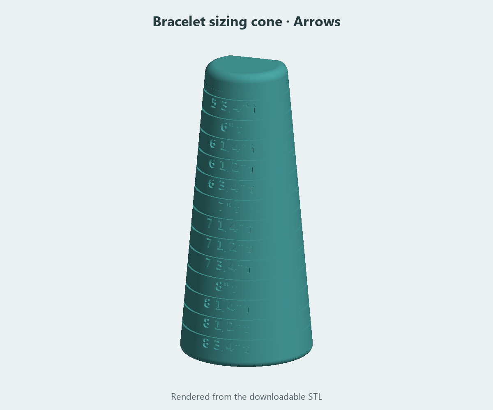
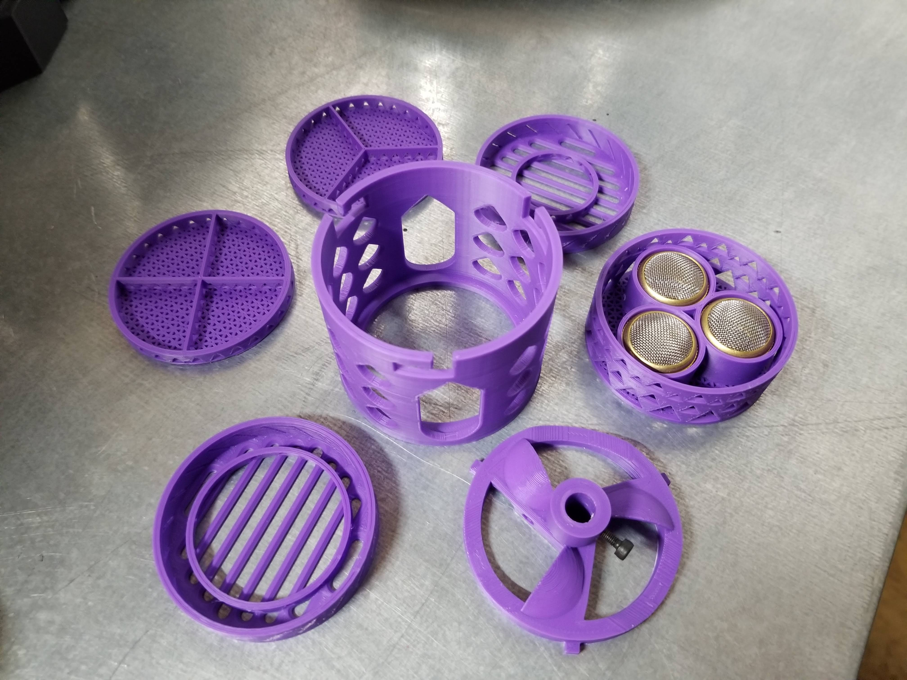
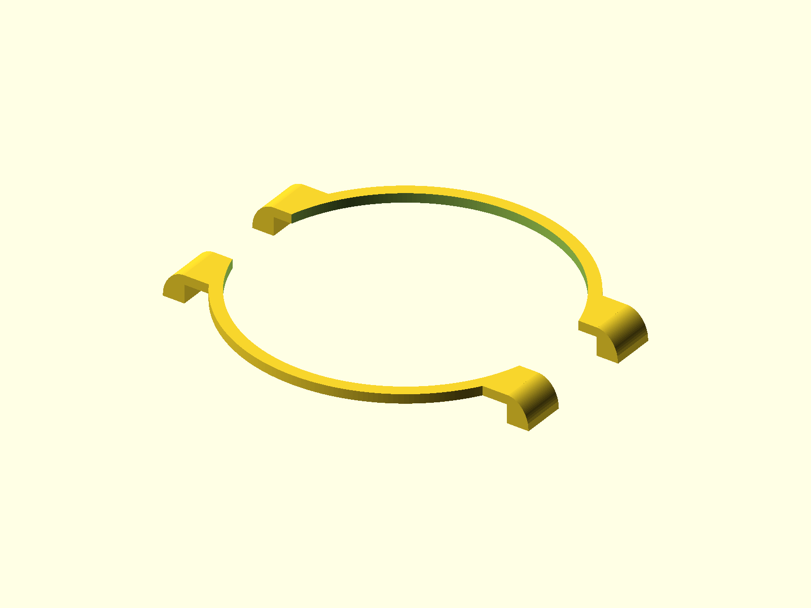

Watch toolsRevision 3
Expansion-band stretcher
An open cleaning drum with reinforced sockets, diagonal braces, and interchangeable band-retaining inserts.
STL · OpenSCADExplore & download
From my workbench to yours
Watch tools, small-scale buildings, game aids, and practical experiments. Browse the models, take a closer look, and download the files for your next print.
Model previews & creator photographs
An open cleaning drum with reinforced sockets, diagonal braces, and interchangeable band-retaining inserts.

Tapered sizing tools for watch bands and bracelets, with arrows, oval, round, and original variants.

A photo-interpreted house and detached garage, split into printable walls and roofs for a model railway or diorama.

Originals: gpraceman, based on muddtt. Modifications: Beau Gosse.
A basket, rotor, spindle, and tray collection, with Beau’s added holes and extra spacer plate.

Design: Beau Gosse
A slim reading aid with a long line opening and a recessed face, saved as an editable PrusaSlicer project.
View on Printables ↗
Design: Beau Gosse
A two-piece replacement bezel with mirrored halves, smooth convex terminals, and dimensions tuned for a Hoyer 6000-series watch.